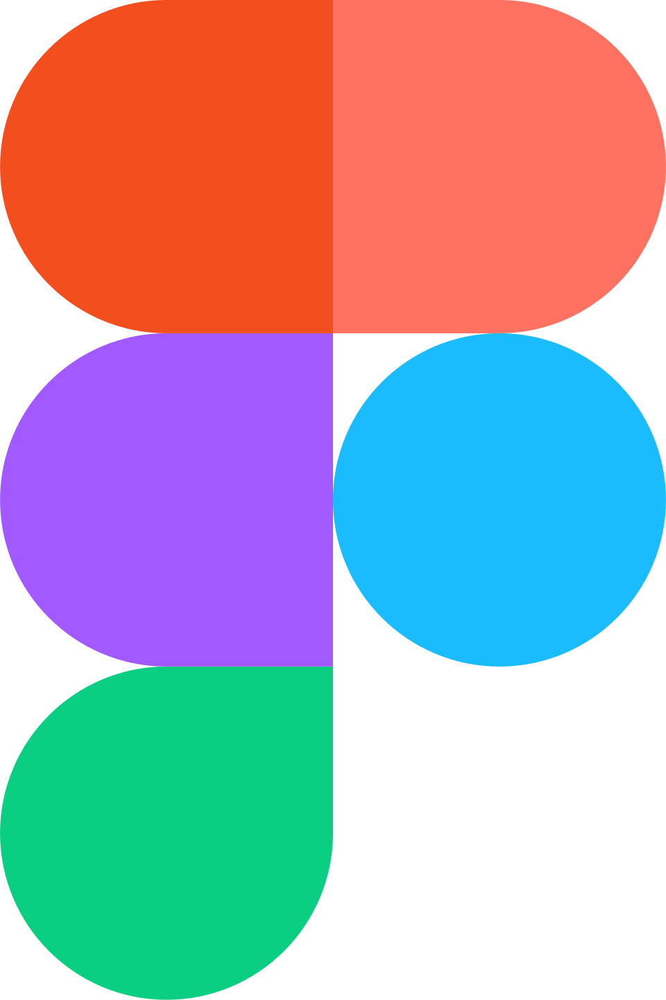

UX Design & maquettage
Avant de coder, il faut comprendre les utilisateurs et formaliser ce qu'on construit. Ce cours suit la démarche du Design Thinking : lire un dossier de spécifications, en extraire les besoins fonctionnels et les exigences de sécurité, les traduire en user stories avec critères d'acceptation, puis produire des maquettes validées par le commanditaire. Fil conducteur : l'application RH SecureConnect de ManuTech.
Comment éviter de livrer, après six mois de développement, une application que personne n'utilise comme prévu ?
On découvre trop tard que le parcours ne correspond pas au travail réel, ou qu'une exigence de sécurité a été oubliée : tout est à refaire.
On observe les utilisateurs, on reformule le vrai problème, on maquette vite, on teste avant d'investir dans le code : l'erreur coûte une feuille de papier, pas un sprint.
Le Design Thinking est une démarche centrée sur l'humain en cinq phases itératives : Empathie, Définition, Idéation, Prototypage, Test. Il produit des besoins clairs, des user stories et des maquettes qui servent de contrat entre l'équipe, le métier et le commanditaire. Le UX design (expérience utilisateur) vise une application utile, utilisable et sûre.
Stanford, IDEO et l'agile : d'où vient la démarche
- Product owners, designers, analystes : formaliser le besoin.
- Data Engineers : comprendre qui consomme un tableau de bord ou une API avant de construire le pipeline.
- Équipes DevOps : boucle de feedback entre la production et la conception (DevOps).
Premier contact : de l'énoncé à la user story
US : En tant qu'employé,
je veux consulter mes bulletins de salaire,
afin de les retrouver sans demander au service RH.
Scénario : accès limité à ses propres bulletins # critère de sécurité (C)
GIVEN je suis connecté en tant qu'employé
WHEN j'ouvre « Mes bulletins »
THEN je ne vois que mes bulletins des 3 dernières années
AND toute consultation est tracée # traçabilité (T)Une user story décrit qui, quoi, pourquoi. Les critères d'acceptation (Gherkin : GIVEN / WHEN / THEN) la rendent testable. Chaque story porte au moins un critère de sécurité, rattaché à un pilier DICT.
- Analyser un besoin et le formaliser.
- Produire des maquettes et user stories validées.
Présenter la démarche UX en une minute
« Je pars du Design Thinking : empathie (qui sont les utilisateurs, quelles frustrations), définition (le vrai problème), idéation, prototypage et test, en boucle. À partir du dossier de spécifications, j'extrais les besoins fonctionnels, les besoins non fonctionnels et les exigences de sécurité (pilier DICT : disponibilité, intégrité, confidentialité, traçabilité).
Je les traduis en user stories (*En tant que / Je veux / Afin de*) avec des critères d'acceptation Gherkin, dont au moins un de sécurité. Puis je maquette (Lo-Fi, Mid-Fi, Hi-Fi), j'annote la sécurité et je valide avec le commanditaire.
Je fais ainsi baisser le coût de l'erreur : elle est découverte sur un prototype, avant le code. »
5 idées font tout le cours
Tout le cours répond à : comment éviter de livrer une application que personne n'utilise comme prévu ? Cinq idées relient Design Thinking, besoins, user stories et maquettes.
Le Design Thinking commence par comprendre l'utilisateur (empathie) et par définir son problème, avant de chercher des solutions. On lit le dossier de spécifications pour savoir qui sont les utilisateurs et ce qu'ils doivent accomplir.
L'erreur typique : Si l'on dessine les écrans avant d'avoir compris le problème des utilisateurs, on produit des écrans qui ne servent à personne.
La bonne pratique : Interroger ou observer quelques utilisateurs, écrire leur problème en une phrase, puis seulement dessiner.
ch. 01 · ch. 02
On classe chaque besoin : fonctionnel (ce que fait le système), non fonctionnel (performance, accessibilité, ergonomie), sécurité (DICT : disponibilité, intégrité, confidentialité, traçabilité). Puis on le rend vérifiable : « moins de 2 secondes », pas « rapide ».
L'erreur typique : Si une exigence dit seulement « l'application doit être rapide », personne ne peut vérifier à la recette si elle est respectée.
La bonne pratique : Écrire « la page de résultats s'affiche en moins de 2 secondes pour 95 % des requêtes ».
ch. 02 · ch. 03
On écrit le besoin du point de vue de l'utilisateur : la user story « En tant que…, je veux…, afin de… », petite et indépendante, avec des critères d'acceptation au format Given / When / Then (étant donné, quand, alors). Ce sont eux qui seront testés.
L'erreur typique : Si une story n'a pas de critère d'acceptation, le développeur et le métier ne sont pas d'accord sur le moment où elle est terminée.
La bonne pratique : Ajouter à chaque story deux ou trois critères Given / When / Then, validés par le métier avant le développement.
ch. 03
On maquette pour tester, pas pour faire joli. Lo-Fi (croquis) pour explorer vite, Mid-Fi (gris, sans style) pour la navigation, Hi-Fi (proche du final) pour valider. On itère avec les utilisateurs et le commanditaire, chaque écran étant relié à une story.
L'erreur typique : Si l'on passe directement à une maquette très finie (Hi-Fi), on s'attache aux couleurs et aux détails, et l'on hésite à remettre en cause le parcours.
La bonne pratique : Commencer par des croquis rapides, tester le parcours avec des utilisateurs, et ne soigner l'aspect qu'ensuite.
ch. 01 · ch. 04
La sécurité et l'accessibilité se décident dès la maquette. On annote le verrouillage, les rôles, le masquage des données et la confirmation des actions sensibles. On vérifie le contraste, l'usage au clavier, et l'on ne fait jamais passer une information par la couleur seule (référentiels RGAA et WCAG).
L'erreur typique : Si une erreur n'est signalée que par une couleur rouge, une personne daltonienne ne la voit pas.
La bonne pratique : Accompagner la couleur d'une icône et d'un texte (« Email invalide ») placé près du champ.
ch. 02 · ch. 04
Le cycle : à chaque étape, une décision
| Étape | Décision | Livrable | Piège |
|---|---|---|---|
| Empathie et définition | quel problème, pour qui | personas, problème reformulé | partir d'une solution déjà choisie |
| Besoins | ce qui est exigé, et comment le mesurer | besoins classés, exigences DICT | « rapide », « simple » sans chiffre |
| User stories | quoi livrer, dans quel ordre | stories + critères Gherkin | story technique sans utilisateur |
| Maquette | quel parcours, quels écrans | Lo-Fi puis Mid-Fi, annotations | Hi-Fi dès le départ |
| Validation | le commanditaire approuve-t-il | compte rendu daté et versionné | accord oral sans trace |
Chaque chapitre applique les mêmes idées
| Chapitre | 1 | 2 | 3 | 4 | 5 |
|---|---|---|---|---|---|
| 01 Design Thinking | ● | ● | |||
| 02 Besoins | ● | ● | ● | ||
| 03 User stories | ● | ● | |||
| 04 Maquettage | ● | ● |
Ce qui revient dans plusieurs chapitres est une idée à comprendre ; ce qui n'apparaît qu'une fois est un exemple d'une de ces idées.
| Erreur de démarche | Idée oubliée | Ce qui casse |
|---|---|---|
| Solution dessinée avant le besoin | 1 · Comprendre l'utilisateur avant de dessiner | des écrans que personne n'utilise |
| Exigence « rapide » sans chiffre | 2 · Un besoin se classe, puis se mesure | invérifiable à la recette |
| Story sans critère d'acceptation | 3 · Écrire le besoin du point de vue de l'utilisateur | désaccord sur « fini » |
| Hi-Fi dès le départ | 4 · Maquetter pour tester, pas pour briller | on corrige moins, on défend le visuel |
| Erreur signalée seulement en rouge | 5 · Sécurité et accessibilité se voient dès la maquette | inaccessible à une partie des utilisateurs |
| Message « ce compte n'existe pas » | 5 · Sécurité et accessibilité se voient dès la maquette | l'attaquant apprend quels comptes existent |
Cinq phases, une démarche itérative
| Phase | Question | Livrable |
|---|---|---|
| Empathie | Qui sont les utilisateurs ? Quelles frustrations ? | personas, parcours, entretiens |
| Définition | Quel est le vrai problème ? | énoncé du problème, besoins |
| Idéation | Quelles solutions possibles ? | idées, user stories |
| Prototypage | Comment le matérialiser vite ? | maquettes, prototype |
| Test | Cela fonctionne-t-il pour eux ? | retours, corrections |
Avant de concevoir une solution, comprendre profondément les personnes qui l'utiliseront. L'approche est itérative : on revient en arrière dès qu'on apprend quelque chose.
- Itération : prototypage fréquent / CI/CD continu.
- Collaboration : équipes pluridisciplinaires / Dev + Ops + métier.
- Feedback : tests utilisateurs / monitoring.
- Apprentissage : un prototype est une donnée / post-mortem sans blâme.
Lire un dossier de spécifications
- Contexte et objectif (ici : remplacer des Excel partagés par une application RH).
- Acteurs : employés, managers, RH, administrateur système.
- Fonctionnalités : connexion, tableau de bord par rôle, demande de congés, workflow, bulletins PDF, export CSV, notifications.
- Contraintes : réseau interne seul, hébergement en entreprise, navigateurs, données en France.
- Informations de contexte : données de santé, audits annuels, tentatives d'intrusion passées.
Les « informations complémentaires » sont souvent les plus importantes pour la sécurité : données de santé = données sensibles (RGPD) ; intrusions passées = exigence renforcée.
- 1. Qui : lister les acteurs et leurs parcours.
- 2. Quoi : extraire les fonctionnalités, par acteur.
- 3. Dans quelles limites : contraintes techniques et réglementaires.
- 4. Quels risques : données sensibles, antécédents, exposition.
Pièges et résumé
- Empathie, Définition, Idéation, Prototypage, Test : en boucle.
- Lire un dossier : acteurs, fonctionnalités, contraintes, risques.
- Les informations de contexte (données sensibles, incidents) pèsent sur la sécurité.
- Même esprit que DevOps : itération, collaboration, feedback.
Fiche — Design Thinking
Empathie · Définition · Idéation · Prototypage · Test.
Comprendre les personnes avant de concevoir ; itératif.
Contexte, acteurs, fonctionnalités, contraintes, informations de contexte.
Itération, collaboration, feedback, apprentissage.
Sécurité traitée tard ; problème mal reformulé.
Données de santé : exigences renforcées.
Questions d'oral — chapitre 01
Empathie (comprendre les utilisateurs), définition (reformuler le vrai problème), idéation (générer des solutions), prototypage (matérialiser vite) et test (confronter au réel). Le processus est itératif : on revient en arrière dès qu'on apprend.
Parce que sans compréhension des besoins réels, on construit une solution à un problème imaginé. L'empathie évite de concevoir pour soi et réduit le risque de rejet par les utilisateurs.
Les deux reposent sur l'itération, la collaboration pluridisciplinaire, le feedback rapide et l'apprentissage : prototypage et tests utilisateurs d'un côté, CI/CD et monitoring de l'autre.
En relevant les acteurs et leurs parcours, les fonctionnalités par acteur, les contraintes techniques et réglementaires, puis les informations de contexte qui révèlent des risques, comme des données sensibles ou des intrusions passées.
Ce sont des données sensibles au sens du RGPD : elles imposent un contrôle d'accès strict, une traçabilité, un chiffrement et une minimisation, donc des exigences de sécurité renforcées dès la conception.
Vérifie tes acquis
Trois familles de besoins
| Famille | Question | Exemple SecureConnect |
|---|---|---|
| Fonctionnel | Que fait le système ? | poser un congé, valider, télécharger un bulletin |
| Non fonctionnel | Comment : performance, ergonomie, disponibilité | pages en moins de 2 s ; compatible Chrome et Edge |
| Sécurité | Comment est-il protégé ? | chiffrer les bulletins ; tracer les accès RH |
Un besoin fonctionnel s'écrit « le système doit permettre à [acteur] de [action] ». Il est vérifiable par une démonstration.
Qualités attendues : performance, disponibilité, ergonomie, accessibilité, compatibilité, maintenabilité. Elles se mesurent (« 95 % des pages en moins de 2 s »).
Un besoin non mesurable (« rapide », « facile ») n'est pas une exigence : il se reformule avec un seuil.
Les exigences de sécurité et le DICT
Quatre piliers pour classer une exigence : Disponibilité, Intégrité, Confidentialité, Traçabilité. Définitions détaillées au cours Sécurité : fondamentaux ; ici on s'en sert pour étiqueter chaque exigence.
| Pilier | Exigence type pour SecureConnect |
|---|---|
| Confidentialité | un employé ne voit que ses bulletins ; chiffrement |
| Intégrité | un congé validé ne peut être modifié que par un acteur autorisé |
| Disponibilité | service accessible aux heures de paie ; sauvegardes |
| Traçabilité | journal horodaté de toute consultation de dossier RH |
- Chaque donnée sensible (santé, salaire) → confidentialité et traçabilité.
- Chaque action d'écriture ou de validation → intégrité.
- Chaque service critique → disponibilité.
- Chaque rôle → principe du moindre privilège.
- Chaque antécédent d'incident → durcissement.
Pièges et résumé
- Fonctionnel (quoi), non fonctionnel (comment), sécurité (protection).
- Un besoin se mesure et se vérifie.
- DICT : Disponibilité, Intégrité, Confidentialité, Traçabilité.
- Données sensibles, écritures, rôles : sources d'exigences de sécurité.
Fiche — Besoins
Ce que fait le système, par acteur.
Qualités mesurables : performance, disponibilité, ergonomie.
Protection : confidentialité, intégrité, disponibilité, traçabilité.
Disponibilité · Intégrité · Confidentialité · Traçabilité.
Un besoin sans seuil n'est pas une exigence.
Chaque rôle n'accède qu'au nécessaire.
Questions d'oral — chapitre 02
Le besoin fonctionnel décrit ce que le système fait pour un acteur (poser un congé) ; le besoin non fonctionnel décrit une qualité mesurable de ce service : performance, disponibilité, ergonomie, compatibilité.
Disponibilité, Intégrité, Confidentialité et Traçabilité : quatre piliers qui servent à classer les exigences de sécurité et à vérifier qu'aucune dimension n'est oubliée.
Je la rattache à un pilier, je la formule de façon vérifiable : « un employé ne peut consulter que ses propres bulletins ; toute tentative d'accès à ceux d'un autre est refusée et journalisée ». On peut la tester par scénario.
Chaque rôle ne reçoit que les droits strictement nécessaires à sa mission. Un employé voit ses données, un manager celles de son équipe, les RH un périmètre défini, l'administrateur la gestion des comptes sans accès aux données de paie.
Elle n'est ni mesurable ni testable : on ne peut pas dire si elle est satisfaite. Il faut la décliner par donnée et par action, avec le pilier concerné et un critère de vérification.
Vérifie tes acquis
Écrire une user story
En tant que [rôle], je veux [action], afin de [bénéfice]. Elle décrit un besoin du point de vue de l'utilisateur, sans imposer la solution, et se discute à l'oral (carte, conversation, confirmation).
- Indépendante · Négociable · Valuable (apporte de la valeur) ·
- Estimable · Small (assez petite pour un sprint) · Testable.
En tant que manager,
je veux valider ou refuser un congé de mon équipe,
afin de planifier la présence des équipes.
En tant qu'employé,
je veux me connecter avec mon identifiant,
afin d'accéder à mon tableau de bord personnalisé.
# Trop grosse (épopée) : « gérer les congés » -> à découper
# Trop technique : « ajouter une table conges » -> pas une storyUne grosse histoire est une épopée (epic) : on la découpe en stories petites et testables.
Critères d'acceptation en Gherkin
- GIVEN (étant donné) : le contexte de départ.
- WHEN (quand) : l'action.
- THEN (alors) : le résultat attendu, observable.
- AND / BUT : conditions supplémentaires.
- Au moins 3 critères par user story.
- Au moins 1 critère de sécurité, rattaché à un pilier DICT.
- Cas nominal + cas d'erreur + cas limite.
Scénario : refus d'accès aux bulletins d'un autre employé # C
GIVEN je suis connecté en tant qu'employé A
WHEN je demande le bulletin de l'employé B
THEN l'accès est refusé (403)
AND la tentative est journalisée avec mon identifiant # T
Scénario : verrouillage après échecs de connexion # I / D
GIVEN j'ai échoué 5 connexions de suite
WHEN je réessaie
THEN le compte est verrouillé 15 minutesLes critères Gherkin servent de tests d'acceptation : ils se transforment en tests automatisés (Cucumber, Behave) et définissent la Definition of Done.
Pièges et résumé
- Format : En tant que / Je veux / Afin de ; INVEST.
- Critères en Gherkin : GIVEN / WHEN / THEN, au moins 3, dont 1 de sécurité.
- Nominal, erreur, limite : couvrir les trois.
- Les critères deviennent des tests d'acceptation (backlog Jira).
Fiche — User stories
En tant que / Je veux / Afin de ; besoin vu par l'utilisateur.
Indépendante · Négociable · Valuable · Estimable · Small · Testable.
GIVEN contexte · WHEN action · THEN résultat observable.
Au moins 3 par story, dont 1 de sécurité (pilier DICT).
Grosse histoire à découper.
Les critères deviennent des tests d'acceptation.
Questions d'oral — chapitre 03
Au format « En tant que, je veux, afin de », du point de vue de l'utilisateur, sans dicter la solution. Je la vérifie avec INVEST : indépendante, négociable, apportant de la valeur, estimable, petite et testable.
À définir précisément quand une story est terminée, de façon testable. Écrits en Gherkin, ils servent de scénarios de test et de base à la Definition of Done.
Étant donné cinq échecs de connexion consécutifs, quand l'utilisateur réessaie, alors le compte est verrouillé quinze minutes et l'événement est journalisé. On l'associe aux piliers intégrité et traçabilité.
Une grande fonctionnalité trop volumineuse pour un sprint, comme « gérer les congés ». On la découpe en user stories plus petites, indépendantes et testables.
Pour qu'elle soit estimée, développée et testée comme le reste, plutôt que découverte en fin de projet. Chaque story porte au moins un critère de sécurité vérifiable.
Vérifie tes acquis
Lo-Fi, Mid-Fi, Hi-Fi
| Niveau | Contenu | Outil | Quand |
|---|---|---|---|
| Lo-Fi (basse fidélité) | esquisses : structure et blocs, sans couleur | papier, Excalidraw | explorer vite, discuter |
| Mid-Fi | wireframe numérique : navigation, textes, champs | Balsamiq, Figma | valider le parcours |
| Hi-Fi (haute fidélité) | visuel final, cliquable (prototype) | Figma | tester avec des utilisateurs |
On construit pour penser : une maquette sert à tester et critiquer, pas à être parfaite. On commence bas de fidélité : moins on y investit, plus on accepte de la jeter.
- Partir des user stories et du parcours (connexion → tableau de bord → demande de congé).
- Un écran = une intention claire ; navigation cohérente.
- Respecter l'ergonomie : hiérarchie visuelle, retour d'état, messages d'erreur utiles, accessibilité (contrastes, clavier).
Annoter la sécurité et valider
- Connexion : verrouillage après N échecs, message d'erreur non révélateur (« identifiant ou mot de passe incorrect »), champ mot de passe masqué.
- Tableau de bord : éléments selon le rôle ; bouton de déconnexion visible ; expiration de session.
- Données sensibles : masquage partiel, confirmation avant export, indication de traçabilité.
- Formulaires : validation côté serveur, protection contre l'injection.
La sécurité se voit dans la maquette : une annotation par écran rend l'exigence explicite pour les développeurs. Les protocoles d'authentification sont détaillés au cours Authentification.
- Rappeler le contexte et les utilisateurs.
- Dérouler un parcours avec la maquette, pas écran par écran.
- Relier chaque choix à une user story ou une exigence.
- Recueillir les retours et décider : accepté, à modifier, rejeté.
- Tracer la validation (compte rendu, version de la maquette).
Concevoir accessible : une exigence, pas une option
- Environ une personne sur six vit avec un handicap (OMS) : visuel, auditif, moteur, cognitif ; on y ajoute les handicaps temporaires (bras cassé) et situationnels (plein soleil, bruit).
- En France, la loi de 2005 impose l'accessibilité numérique aux services publics ; depuis le 28 juin 2025, l'European Accessibility Act l'étend à de nombreux services privés (commerce en ligne, banque, transport).
- Le référentiel français est le RGAA, fondé sur les WCAG (niveau AA visé).
| Principe WCAG | Question | Exemple |
|---|---|---|
| Perceptible | peut-on percevoir le contenu ? | texte alternatif des images, sous-titres, contraste suffisant |
| Utilisable | peut-on s'en servir sans souris ? | navigation au clavier, focus visible, cibles assez grandes |
| Compréhensible | comprend-on ce qui se passe ? | libellés de champs, messages d'erreur explicites |
| Robuste | les aides techniques le lisent-elles ? | HTML sémantique, lecteur d'écran compatible |
- Contraste du texte d'au moins 4,5:1 (3:1 pour les grands textes).
- Ne jamais coder une information par la couleur seule : ajouter une icône ou un libellé (vrai aussi pour un graphique Power BI).
- Chaque champ a un libellé visible ; l'erreur dit quoi corriger.
- Ordre de tabulation logique et focus visible.
Une MFA qui suppose « un smartphone à portée de main » exclut une personne malvoyante ou sans téléphone personnel. On prévoit un facteur de repli (clé matérielle, codes à usage unique imprimés, assistance avec vérification) pour que chacun se connecte sans dépendre d'un tiers : c'est une question de dignité (Authentification).
Dans le dossier de certification, l'accessibilité est attendue dans tous les blocs : besoins non fonctionnels, maquettes, tests (audit Lighthouse, lecteur d'écran), organisation du projet (aménagements pour un membre de l'équipe).
Pièges et résumé
- Lo-Fi (esquisse) → Mid-Fi (wireframe) → Hi-Fi (prototype cliquable).
- « Build to think » : maquetter pour tester, pas pour briller.
- Annoter la sécurité sur chaque écran sensible.
- Accessibilité : RGAA / WCAG AA, contraste, clavier, jamais la couleur seule.
- Présenter par parcours, relier aux stories, tracer la validation.
Fiche — Maquettage
Lo-Fi (esquisse) · Mid-Fi (wireframe) · Hi-Fi (prototype).
Build to think, not think to build.
Papier, Excalidraw, Balsamiq, Figma, draw.io.
Sécurité visible dans la maquette : verrouillage, rôles, masquage.
Présenter par parcours, relier aux stories, tracer la décision.
Message générique, non révélateur.
Questions d'oral — chapitre 04
Le Lo-Fi est une esquisse de structure, rapide et jetable ; le Mid-Fi est un wireframe numérique qui valide la navigation et les contenus ; le Hi-Fi est un visuel final cliquable, utilisé pour tester avec des utilisateurs.
Elle coûte peu, invite à la critique et se jette sans regret. Un visuel soigné détourne la discussion vers les couleurs au lieu du parcours et rend les changements plus coûteux.
Par des annotations par écran : verrouillage après échecs, message d'erreur générique, champ de mot de passe masqué, contenus selon le rôle, expiration de session, confirmation avant export de données sensibles.
En rappelant le contexte et les utilisateurs, en déroulant un parcours complet, en reliant chaque choix à une user story ou une exigence, puis en recueillant et traçant les décisions.
Un message précis (« ce compte n'existe pas ») permet d'énumérer les comptes valides. On répond de façon identique quel que soit l'élément faux.
Vérifie tes acquis
45 questions pour affronter le jury
Tous chapitres mélangés ; l'ordre des questions et des réponses change à chaque tentative. Certaines questions ont plusieurs bonnes réponses.